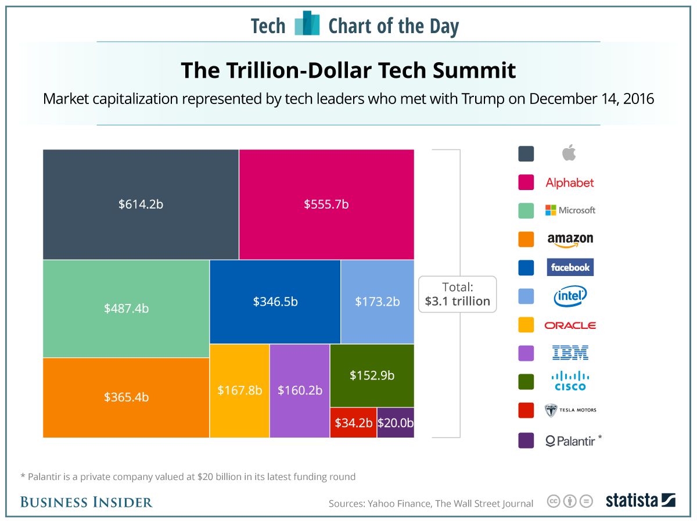
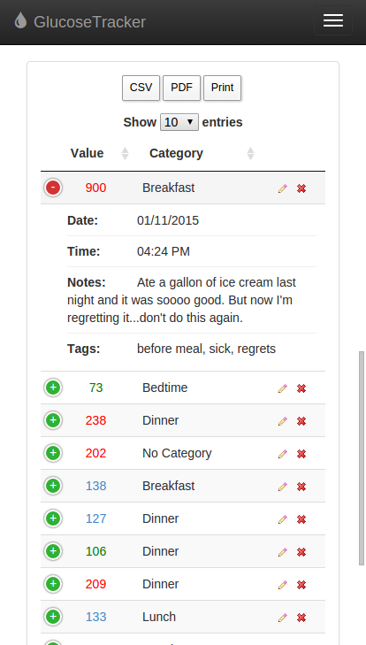

Exercises: Visual Information
Evaluate these two examples. They are also available as image files on the workshop website - use the NoCoffee Chrome extension or the Colblinder Color Blindness Simulator to check the use of colors in each example.
Example 1: The Trillion Dollar Tech Summit chart
Think about:
How can this information be represented differently?
Annotate the image with suggestions for improvements.
Example 2: Glucose Tracker App
Think about:
- What do the colors mean?
- Which parts are interactive?
Annotate the screenshot with suggestions for improvements.
